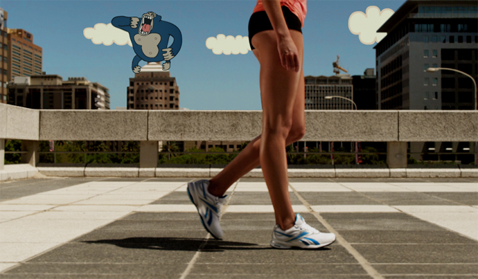
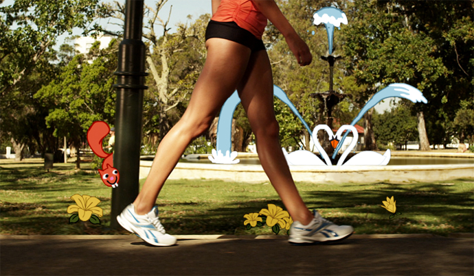
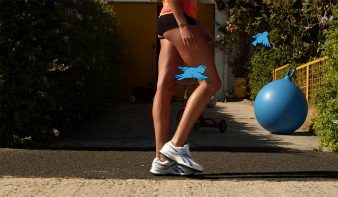

Film and animation mix for Reebok. A day in the life of the girl who wears Reebok's Easytone trainer. She tones her muscles simply by going about her day to day business. From the opening shot of her leaving her flat in the morning to the close in the evening, various animated characters interact with her to illustrate the admiration she receives through her newly toned figure.
  